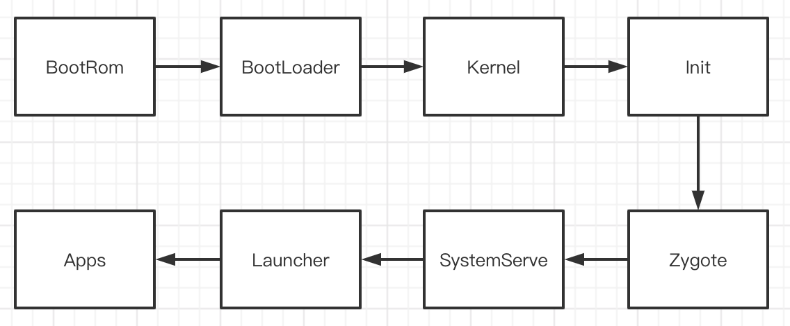

系统启动
Android手机从开机到完全可以使用，大致会经历下面几个流程

Boot Rom
是一个驻留在CPU专用集成电路的硬连线代码
当按下电源键,硬件上电之后,会从一个固定的内存区域读取程序.这个程序是烧写到硬件上的(ROM),用于将bootloader加载到RAM中,并开始执行它.
Boot Loader
引导加载程序，它是一个小程序，在Android操作系统开始运行之前运行
bootloader用于告诉设备如何找到系统内核,和启动内核.
手机厂商一般会在bootloader中加上密钥锁和一些限制.
bootloader执行一般分为两个阶段:
Kernel Android使用的linux kernel,当kernel启动时,会执行一系列的初始化操作,比如设置缓存,内存,加载驱动程序,挂载根文件系统,初始化输入输出等.以上都属于内核态进程。
当内核启动完成之后,第一件要做的事就是在系统文件中找一个“init”,作为根进程或者第一个系统进程.
init init进程是用户空间的 第一个进程,也是所有进程的“祖父”进程.
init进程主要负责两件事:
挂载(mount) /sys, /dev 或者/proc等文件
运行/init.rc脚本,init.rc负责系统的初始化设置.
init.rc位置:/system/core/rootdir/init.rc
init.rc脚本会启动servicemanager,创建zygote进程(fork方式).
Zygote Zygote是在init进程启动时创建的，它又称为孵化器，它可以通过fork（复制进程）的形式来创建应用程序进程和SystemServer进程。并且，Zygote进程在启动的时候回创建DVM或者ART，因此通过fork而创建的应用程序进程和SystemServer进程可以在内部获取一个DVM或者ART的实例副本。
Zygote进程启动中承担的主要职责如下：
1、创建AppRuntime，执行其start方法，启动Zygote进程。。
2、创建JVM并为JVM注册JNI方法。
3、使用JNI调用ZygoteInit的main函数进入Zygote的Java FrameWork层。
4、使用registerZygoteSocket方法创建服务器端Socket，并通过runSelectLoop方法等等AMS的请求去创建新的应用进程。
5、启动SystemServer进程。
SystemServer 既然system server是一个进程,那么通常也有一个main()方法作为入口:
主要完成了：
Bootstrap Service
Core Service
Other Service
每个类型的服务数量都非常之多,并且服务直接的启动顺序是有讲究的.
其中，Bootstrap Service中启动了AMS,在ActivityManagerService中,调用finishBooting()方法,也就意味着启动完成.
启动Launch App(桌面) ActivityManagerService启动完毕之后,会通过默认的”homeIntent”启动Launch App.
LaunchAPP启动完毕之后,会发送启动完成的广播,供应用监听.
SystemServer分析 Zygote是Java框架端的入口，在init进程中通过 init.rc 脚本启动启动的。ZygoteInit.java 文件作为JNI 层启动Zygote 的入口，我们来看其中main方法
main 1 2 3 4 5 6 7 8 9 10 11 12 13 14 15 16 17 18 19 20 21 22 23 24 25 26 27 28 29 30 31 32 33 34 35 36 37 38 39 40 41 42 43 // ZygoteInit.java main public static void main(String argv[]) { ...... //开启SystemServer标示 boolean startSystemServer = false; //zygoteSocketName名字 String zygoteSocketName = "zygote"; String abiList = null; boolean enableLazyPreload = false; //根据参数赋值判断 for (int i = 1; i < argv.length; i++) { if ("start-system-server".equals(argv[i])) { startSystemServer = true; } else if ("--enable-lazy-preload".equals(argv[i])) { enableLazyPreload = true; } else if (argv[i].startsWith(ABI_LIST_ARG)) { abiList = argv[i].substring(ABI_LIST_ARG.length()); } else if (argv[i].startsWith(SOCKET_NAME_ARG)) { zygoteSocketName = argv[i].substring(SOCKET_NAME_ARG.length()); } else { throw new RuntimeException("Unknown command line argument: " + argv[i]); } } ...... //创建ZygoteServer，isPrimaryZygote=true 表示 zygote进程 zygoteServer = new ZygoteServer(isPrimaryZygote); //创建SystemServer if (startSystemServer) { Runnable r = forkSystemServer(abiList, zygoteSocketName, zygoteServer); if (r != null) { r.run(); return; } } //等待通过socket， AMS 请求交互，如果可以执行到此 caller = zygoteServer.runSelectLoop(abiList); caller.run() ....... }
可以发现上面main方法流程如下：
创建一个 Server 端为 ”zygote“ 名称的 Socket，用于等待 AMS 请求 Zygote 来创建新的应用程序进程。
根据 JNI 传递过来的信息来判断是否启动 SystemServer 进程。
等待 AMS 请求，用于创建新的应用程序进程。
ZygoteServer ZygoteServer 定位就是zygote服务和客户端的连接器、处理器。客户端通过名为zygote的socket发来一些启动请求，由zygote进程fork出来子进程，享用zygote在启动初期所做好的一切（JVM初始化、JNI初始化、class预加载、资源预加载等），而后执行通过命令解析出的Runnable
启动 SystemServer 进程 1 2 3 4 5 6 7 8 9 10 11 12 13 14 15 16 17 18 19 20 21 22 23 24 25 26 27 28 29 30 31 32 33 34 35 36 37 38 39 40 41 42 43 44 45 // ZygoteInit.java forkSystemServer private static Runnable forkSystemServer(String abiList, String socketName, ZygoteServer zygoteServer) { ...... //1.1. 启动 SystemServer 的参数 String args[] = { "--setuid=1000", "--setgid=1000", "--setgroups=1001,1002,1003,1004,1005,1006,1007,1008,1009,1010,1018,1021,1023," + "1024,1032,1065,3001,3002,3003,3006,3007,3009,3010,3011", "--capabilities=" + capabilities + "," + capabilities, "--nice-name=system_server", "--runtime-args", "--target-sdk-version=" + VMRuntime.SDK_VERSION_CUR_DEVELOPMENT, "com.android.server.SystemServer", }; ....... //创建一个子进程，也就是 SystemServer 进程 pid = Zygote.forkSystemServer( parsedArgs.mUid, parsedArgs.mGid, parsedArgs.mGids, parsedArgs.mRuntimeFlags, null, parsedArgs.mPermittedCapabilities, parsedArgs.mEffectiveCapabilities); ....... /* For child process */ //如果当前代码运行在子进程中 ，也就是 SystemServer 进程中 if (pid == 0) { if (hasSecondZygote(abiList)) { waitForSecondaryZygote(socketName); } zygoteServer.closeServerSocket(); // return handleSystemServerProcess(parsedArgs); } return null; }
1 2 3 4 5 6 7 8 9 10 11 12 13 14 15 16 17 18 19 // Zygote.java forkSystemServer static int forkSystemServer(int uid, int gid, int[] gids, int runtimeFlags, int[][] rlimits, long permittedCapabilities, long effectiveCapabilities) { ZygoteHooks.preFork(); int pid = nativeForkSystemServer( uid, gid, gids, runtimeFlags, rlimits, permittedCapabilities, effectiveCapabilities); // Set the Java Language thread priority to the default value for new apps. Thread.currentThread().setPriority(Thread.NORM_PRIORITY); ZygoteHooks.postForkCommon(); return pid; } private static native int nativeForkSystemServer(int uid, int gid, int[] gids, int runtimeFlags, int[][] rlimits, long permittedCapabilities, long effectiveCapabilities);
这个调用最终在ART虚拟机中生效，虚拟机为从zygote衍生出来的子进程做了一系列的配置。当然，这个过程中，对于system_server有过很多特殊的待遇（比如，关闭JIT）。
handleSystemServerProcess 1 2 3 4 5 6 7 8 9 10 11 12 13 14 15 16 17 18 19 20 21 22 23 24 25 26 27 28 29 30 31 32 33 34 35 36 37 38 39 40 41 42 43 44 /ZygoteInit.java handleSystemServerProcess private static void handleSystemServerProcess( ZygoteConnection.Arguments parsedArgs) throws Zygote.MethodAndArgsCaller { ... if (parsedArgs.invokeWith != null) { ... } else { ClassLoader cl = null; if (systemServerClasspath != null) { /** * 1. 创建了 PathClassLoader */ cl = createPathClassLoader(systemServerClasspath, parsedArgs.targetSdkVersion); Thread.currentThread().setContextClassLoader(cl); } /** * 2. 调用自己的 zygoteInit 函数 */ ZygoteInit.zygoteInit(parsedArgs.targetSdkVersion, parsedArgs.remainingArgs, cl); } /* should never reach here */ } public static final Runnable zygoteInit(int targetSdkVersion, long[] disabledCompatChanges, String[] argv, ClassLoader classLoader) { if (RuntimeInit.DEBUG) { Slog.d(RuntimeInit.TAG, "RuntimeInit: Starting application from zygote"); } Trace.traceBegin(Trace.TRACE_TAG_ACTIVITY_MANAGER, "ZygoteInit"); RuntimeInit.redirectLogStreams(); RuntimeInit.commonInit(); //1. 启动 Binder 线程池 ZygoteInit.nativeZygoteInit(); //2. 进入 SystemServer 的 main 方法 return RuntimeInit.applicationInit(targetSdkVersion, disabledCompatChanges, argv, classLoader); }
通过反射直接调用 SystemServer.java main()
SystemServer main 1 2 3 4 5 6 7 8 9 10 11 12 13 14 15 16 17 18 19 20 21 22 23 24 25 26 27 28 29 30 31 32 33 34 35 36 37 38 39 40 41 public static void main(String[] args) { new SystemServer().run(); } private void run() { try { ... Looper.prepareMainLooper(); //1. 加载动态库 libandroid_servers .so System.loadLibrary("android_servers"); performPendingShutdown(); //创建系统级别的 Context createSystemContext(); //2. 创建 SystemServiceManager 它会对系统服务进行创建、启动和生命周期管理 mSystemServiceManager = new SystemServiceManager(mSystemContext); mSystemServiceManager.setRuntimeRestarted(mRuntimeRestart); LocalServices.addService(SystemServiceManager.class, mSystemServiceManager); // Prepare the thread pool for init tasks that can be parallelized SystemServerInitThreadPool.get(); } finally { traceEnd(); // InitBeforeStartServices } try { traceBeginAndSlog("StartServices"); //3. SystemServiceManager启动了 AMS 、PowerMS、PackageMS 等服务 startBootstrapServices(); //4. 启动了 DropBoxManagerService、BatteryService、UsageStatsService 和 WebViewUpdateService startCoreServices(); //5. 启动了CameraService、AlarmManagerService、VrManagerService 等服务。 startOtherServices(); SystemServerInitThreadPool.shutdown(); } catch (Throwable ex) { throw ex; } finally { traceEnd(); } ... Looper.loop(); throw new RuntimeException("Main thread loop unexpectedly exited"); }
通过上面代码主要做了哪些事儿，请看下面总结
创建消息 Looper
加载动态库 libandroid_servers .so
创建系统级别的 Context
创建 SystemServiceManager 它会对系统服务进行创建、启动和生命周期管理
通过 SystemServiceManager 启动 AMS 、PowerMS、PackageMS 等服务
启动 DropBoxManagerService、BatteryService、UsageStatsService 和 WebViewUpdateService 等核心服务，他们父类都是 SystemServer
启动 CameraService、AlarmManagerService、VrManagerService 等服务
官方把系统分为了 三种类型，分别是引导服务，核心服务和其它服务, 其中其它服务是一些非紧要和不需要立即启动的服务。这 三种类型的服务总有 100 多个，下面列出部分系统服务及其作用。
引导服务
作用
Installer
系统安装 APK 的一个服务类，启动完成 Installer 服务之后才能启动其它系统服务
ActivityManagerService
负责四大组件的启动、切换、调度
PowerManagerService
计算系统中和 Power 相关的计算，然后决策系统应该如何反应
LightsService
管理和显示背光 LED
DisplayManagerService
用来管理所有显示设备
UserManagerService
多用户模式管理
SensorService
为系统提供各种感应器服务
PackageManagerService
用来对 APK 进行安装、解析、删除、卸载等操作
……
……
核心服务
作用
DropBoxManagerService
用于生成和管理系统运行时的一些日志文件
BatteryService
管理电池相关服务
UsageStatsService
手机用户使用每一个 APP 的频率、使用时长
WebViewUpdateService
WebView 更新服务
其它服务
作用
CameraService
摄像头相关服务
AlarmManagerService
全局定时器管理服务
InputManagerService
管理输入事件
WindowManagerService
窗口管理服务
VrManagerService
VR 模式管理服务
BluetoothService
蓝牙管理服务
NotificationManagerService
通知管理服务
DeviceStorageMonitorService
存储相关管理服务
LocationManagerService
定位管理服务
AudioService
音频相关管理服务
……
……
ActivityManagerService 服务启动 1 2 3 4 5 6 7 8 9 10 11 12 13 14 15 16 17 18 19 20 21 22 23 24 25 26 27 28 29 30 31 32 33 34 35 36 37 38 //com.android.server SystemServer.java private void startBootstrapServices() { ... //1. 调用 SystemServiceManager 的统一启动服务接口 startService mActivityManagerService = mSystemServiceManager.startService( ActivityManagerService.Lifecycle.class).getService(); //2. AMS 与 系统服务管理类进行绑定 mActivityManagerService.setSystemServiceManager(mSystemServiceManager); //3. AMS 与 APK 安装服务进行绑定 mActivityManagerService.setInstaller(installer); ... } public <T extends SystemService> T startService(Class<T> serviceClass) { //1. 反射实例化对象 Constructor<T> constructor = serviceClass.getConstructor(Context.class); service = constructor.newInstance(mContext); //2. startService(service); return service; } public void startService(@NonNull final SystemService service) { // 1. mServices.add(service); // Start it. long time = System.currentTimeMillis(); try { //2. service.onStart(); } catch (RuntimeException ex) { } }
从 Java 框架入口 ZygoteInit.main() 函数到 SystemServer 进程启动和处理服务启动的逻辑执行流程大概总结说明下：
创建一个 Server 端为 ”zygote“ 名称的 Socket，用于等待 AMS 请求 Zygote 来创建新的应用程序进程。
预处理加载类跟资源。
根据 JNI 传递过来的信息来判断是否创建 SystemServer 进程。
启动 Binder 线程池，与其它进程进行通信。
进入 SystemServer.java main() 函数并创建 SystemServiceManager ，用于对各种服务的创建、启动和生命周期的管理。
启动各种系统服务。
等待 AMS 请求，用于创建新的应用程序进程。
Launcher 的启动分析 App启动 服务器客户端(以下简称CS架构)的概念不仅仅存在于Web开发中，在Android的框架设计中，使用的也是CS架构。服务器端指的就是所有App共用的系统服务，比如我们这里提到的AMS、PMS、WMS等，这些基础的系统服务是被所有的App公用的，当某个App想实现某个操作的时候，要告诉这些系统服务。
SystemServer进程会初始化近百个Android服务，其中AMS就是和四大组件关系非常大的服务。
AMS